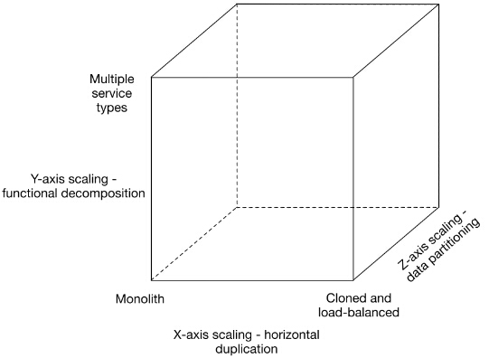
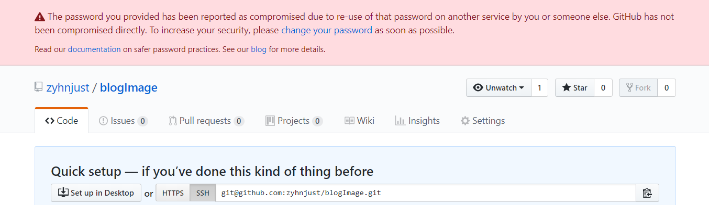
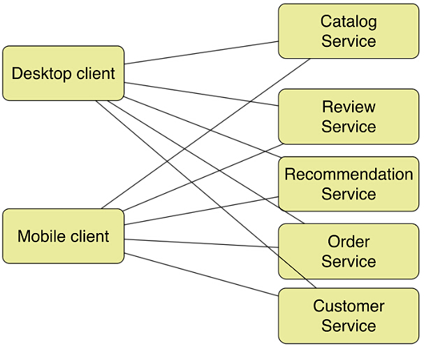

微服务和Vertx
什么是微服务
微服务是一种架构风格， 一个大型复杂软件由一个或者多个微服务组成， 系统中的每个微服务可以独立部署， 各个微服务之间是松耦合的。 每个微服务仅关注与完成一件任务并很好的完成这个任务。 每个任务代表着一个小的业务能力。
每个服务之间通过restful 和rpc 的方式， 相互调用。
历史的演化
最早的时候是单体结构， 然后分成了不同的部分， 抽离了MVC， 以及数据层。
现在呢则演变成了微服务的架构。
- 巨石(monolith)应用。 在早期， 大部分web工程将所有功能模块打包到一起并放在一个web 容器中。 好处是本机就很容易部署。
- 巨石应用的拆分。

 - 比如此图中老外的抽象。 x 轴可以扩展web服务器， z轴可以分库分表。 y功能分开。
成为以下的结构

对于已经找准市场，业务即将或者马上就要急剧发展的创业公司，适合使用基于微服务的软件架构。
– 好处
- 独立部署， 容易升级， 开发隔离性强
- 解耦开发团队
- 模块之间的耦合性降低
- 复用性更高了
- 易于扩展
– 一些缺点
- 系统更加复杂了。 维护成为了新的问题
– 思考
如果很长时间都不会有更新的部分， 其实没有必要一个一个拎出来， 既然不开发， 拿出来有什么用呢。
要解决的几个问题
- 服务注册与发现 Eureka Server、Eureka Client
- 服务交互 RestTemplate、Apache HttpClient
- 服务消费
- 负载均衡
- 服务熔断
- 服务路由网管
- 配置中心
- 监控 - nagios 普罗米修斯。 日志可以用elk。
如何实现， 落地
就是选材的问题， 用k8s， 其实是可以的。
- dubbo 这个是rpc 作为接口的。 缺点是它主要是面向java 技术栈的， 跨语言能力不足。
- spring cloud 也是一个重要的选择 ，目前可以认为是构建 Java 微服务的一个社区标准
REST 天然支持跨语言， - vertx 构建单个应用。 然后用的k8s 做部署。 自己用的k8s 基本来弄的。
微服务和SOA 的区别
- 可以把微服务当做去除了ESB 的SOA。 在SOA中， ESB 是中心总线， 设计图形是星型的， 而微服务则是去中心化的分布式软件架构。
什么是vertx
我司对微服务的实践
如何基于vertx 构建微服务。
QA
1 为什么spring cloud netflix 设计eureka， 而不是直接用的zk
- 分布式系统注明的CAP 定理： C 数据一致性， A 服务可用性， P 服务对网络分区故障的容错性。 这个三个条件任何时候最多只能保证两个。 由于是分布式环境， P 是不可少的。 所以讨论围绕着C 和 A 来开展。
- zookeeper 是hadoop的一个子项目， 很多场景作为service 服务发现的解决方案， 它保证的是CP。 如果是在大部分分布式环境中， 尤其是涉及到数据存储的场景， 数据一致性应该是首先要保证的。 但是对于服务发现场景， 情况就不同了。
对于消费者而言， 能消费才是最重要的。 拿到可能不正确的服务尝试消费一下， 也好过无法获取实力信息而不去消费。 所以AP 胜过CP。 所以spring cloud Netflix 设计Eureda 的时候就是AP 原则。
另外一个区别是ZK 是 选举leader的过程， 而Eureka server 则是Peer to Peer 的方式， 这是一种去中心的架构， 没有master/slave 的区分。 每个peer 是对等的。
2 AMazon
很早亚马逊就开始服务化改造， 要求。
- 所有团队都要以服务接口的方式， 提供数据和各种功能。
- 不允许直接链接， 不允许直接读其他团队的数据。 不允许共享内存， 唯一的方式就是网络调用服务。
- 默认接口对外部开放， 这个没有讨价的余地。
3 在遗留系统如何做这件事情
建议老的系统不懂， 新增系统用微服务， 逐步推进
TODO
参考
1 http://cloud.51cto.com/art/201512/500474.htm
微服务与SOA之间差了一个ESB
2